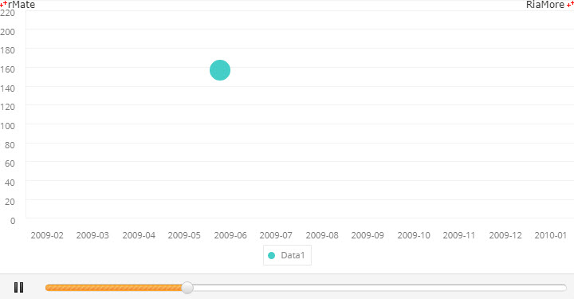
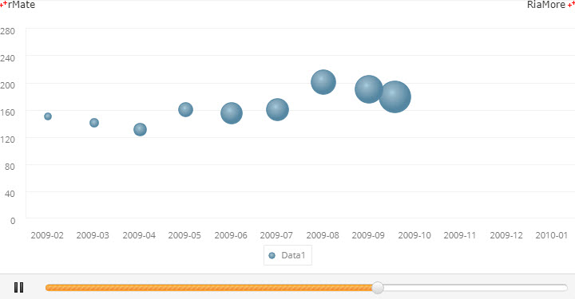
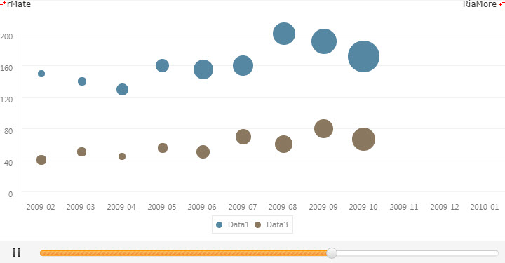
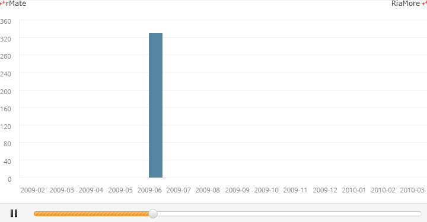
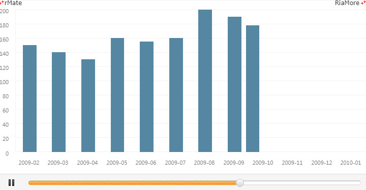
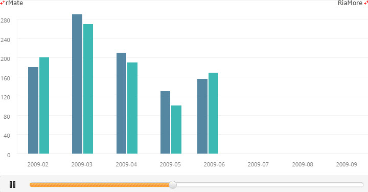
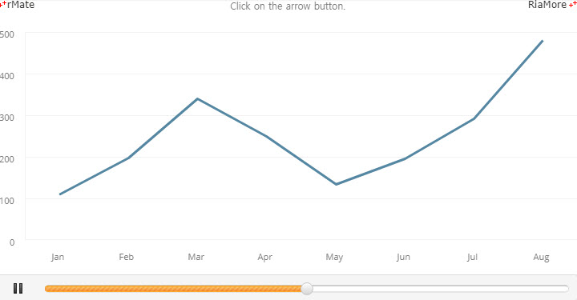

모션 차트
모션 차트는 한 차트에서 데이터가 변동되는 과정을 슬라이드 애니메이션 효과로 표현하는 차트입니다.
차트의 하단에 재생, 멈춤을 지시하는 버튼과 진행상황에 대한 상태 바가 표시됩니다.
모션 차트는 현재 버블 시리즈, 컬럼 시리즈, 라인 시리즈가 지원되며,
<MotionChart> 노드의 series 속성값에 <MotionBubbleSeries>, <MotionColumnSeries>, <MotionLineSeries> 노드를 설정하여 생성할 수 있습니다.
모션 버블 차트
다음은 모션 버블 차트를 생성하는 코드와 이를 적용해서 출력한 차트의 예제입니다.
<MotionChart showDataTips="true">
<horizontalAxis>
<CategoryAxis categoryField="Month"/>
</horizontalAxis>
<series>
<MotionBubbleSeries labelPosition="inside" yField="Data1" radiusField="Data2" displayName="Data1" formatter="{numFmt}" alwayShowLabels="false">
<fill>
<SolidColor color="#45cec8"/>
</fill>
</MotionBubbleSeries>
</series>
</MotionChart>

See the CodePen 알메이트 차트 - 모션 버블 차트
다음은 모션 버블 차트 생성시 <MotionBubbleSeries> 노드의 showTrailItems 속성값을 “true” 로 지정하여, 버블이 이동된 자취(trail)를 보여주는 예제입니다.

See the CodePen 알메이트 차트 - 모션 버블 차트
다음은 모션 버블 차트 생성시 2 개의 <MotionBubbleSeries> 노드를 정의하고, showTrailItems 속성값을 “true” 로 지정하여, 2 개의 버블이 이동된 자취(trail)를 보여주는 예제입니다.

See the CodePen 알메이트 차트 - 다중 시리즈 모션 버블 차트
모션 컬럼 차트
다음은 모션 컬럼 차트를 생성하는 코드와 이를 적용해서 출력한 차트의 예제입니다.
<MotionChart showDataTips="true">
<horizontalAxis>
<CategoryAxis id="hAxis" categoryField="Month"/>
</horizontalAxis>
<verticalAxis>
<LinearAxis id="vAxis"/>
</verticalAxis>
<series>
<MotionColumnSeries labelPosition="inside" displayName="Data1" yField="Data1" formatter="{numFmt}" color="#ffffff">
<fill>
<SolidColor color="#5587a2"/>
</fill>
</MotionColumnSeries>
</series>
</MotionChart>

See the CodePen 알메이트 차트 - 모션 컬럼 차트
다음은 모션 컬럼 차트 생성시 <MotionColumnSeries> 노드의 showTrailItems 속성값을 “true” 로 지정하여, 컬럼이 이동된 자취(trail)를 보여주는 예제입니다.

See the CodePen 알메이트 차트 - 모션 컬럼 차트 - 컬럼이 이동된 자취
다음은 모션 컬럼 차트 생성시 2 개의 <MotionColumnSeries> 노드를 정의하고, showTrailItems 속성값을 “true” 로 지정하여, 2 개의 컬럼이 이동된 자취(trail)를 보여주는 예제입니다.

See the CodePen 알메이트 차트 - 다중 시리즈 모션 컬럼 차트
모션 라인 차트
다음은 모션 라인 차트를 생성하는 코드와 이를 적용해서 출력한 차트의 예제입니다.
<MotionChart showDataTips="true">
<horizontalAxis>
<CategoryAxis id="hAxis" categoryField="Month"/>
</horizontalAxis>
<verticalAxis>
<LinearAxis id="vAxis"/>
</verticalAxis>
<series>
<MotionLineSeries labelPosition="up" displayName="Profit/Cost/Revenue" yField="Data1">
<lineStroke>
<Stroke color="#5587a2" weight="3"/>
</lineStroke>
<showDataEffect>
<SeriesInterpolate duration="300"/>
</showDataEffect>
</MotionLineSeries>
</series>
</MotionChart>

See the CodePen 알메이트 차트 - 모션 라인 차트
모션 라인 차트에서는 화면에 애니메이션으로 변화되는 개수만큼의 데이터셋이 배열로 정의되어야 합니다. 다음은 위 예제에 적용된 데이터셋입니다.
var chartData = [
[
{"Month":"Jan", "Data1":112},
{"Month":"Feb", "Data1":160},
{"Month":"Mar", "Data1":148},
{"Month":"Apr", "Data1":200},
{"Month":"May", "Data1":170},
{"Month":"Jun", "Data1":97},
{"Month":"Jul", "Data1":100},
{"Month":"Aug", "Data1":80},
{"Month":"Sep", "Data1":110},
{"Month":"Oct", "Data1":120},
{"Month":"Nov", "Data1":110},
],[
{"Month":"Jan", "Data1":112},
{"Month":"Feb", "Data1":420},
{"Month":"Mar", "Data1":410},
{"Month":"Apr", "Data1":320},
{"Month":"May", "Data1":222},
{"Month":"Jun", "Data1":312},
{"Month":"Jul", "Data1":180},
{"Month":"Aug", "Data1":50}
],[
...
];